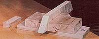
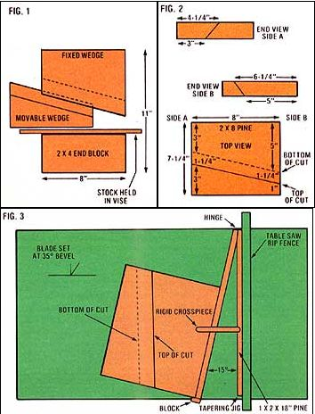

Would you believe that when shopping for a workbench vise recently I discovered that the least expensive suitable unit was tagged at $38.95 . . . plus tax? Well, that price not only jarred my sensibilities . . . it also jogged my memory to the point where I was able to recall a simple little do-it-yourself work holder I'd learned to make back in ninth grade.
As you can see from the photo, this device isn't the usual jaws-and-turnscrew gizmo you find on most workbenches. Instead, the basic vise consists of three pieces of wood (Fig. 1) : a 2 X 4 X 8" end block, which is screwed securely in place . . . and two interlocking 2 X 8 sections, the larger of which is fixed to the same surface as and aligned a short distance from the end block, while the smaller component is used to wedge stock in place between the two stops. And as simple as the design is, it's danged effective!
The secret to the gadget's holding power is the fact that the movable chock and its partner are made by slicing an 8" piece of 2 X 8 pine lengthwise (with the grain) but on a slant (see Fig. 2) . . . while the saw blade itself is set at a slight tilt rather than straight up and down. This technique produces a pair of angular, trapezoid-shaped pieces, each with a beveled edge. When the two cut sides are forced together, they mesh perfectly the free one slightly under the fixed one-and their opposing angles prevent the wedge and the stock it's helping to grip from popping out.
In professional woodworking circles, the cut that I'm talking about is called a "compound rip bevel", but I just call it "easy" . . . if it's done using a table saw that has a tapering jig. Simply set the blade at an angle of 35 to 40° and the jig at approximately 15°, and cut the 2 X 8 as shown in Figs. 2 and 3. (As you look at the drawings, remember that the actual size of finished lumber is always smaller than its stated dimensions. Thus, a 2 X 8 in fact measures about 1-1/2" X 7-1/4". )
If your saw (or the one you've borrowed for the project) doesn't have a tapering attachment, you can make your own as illustrated in Fig. 3 by joining the ends of two 18" lengths of 1 X 2 pine with a hinge. The right side of the contrivance can then follow your saw's rip fence, while the left is used to adjust for whatever degree of taper you want. A rigid crosspiece attached between the two arms will lock the setting in place. It's also a good idea to nail a block of scrap wood at a right angle to the lower end of the jig's left extension, to give some support to the stock you're cutting and to assure a square start.
Of course, you can use hand-held manual or power tools to make functional although somewhat less than perfect components for your vise. Just use the measurements shown in Fig. 2 and cut as carefully and accurately as possible.
Once the parts are shaped, place the large trapezoid where you want it to be (you can trim both stops, if necessary, to fit a readily moved mounting board), and then align the 2 X 4 end block so that its long sides are parallel to the angular section's top (uncut) side . . . and so that the distance between the outside edges of the two stops is about 11 inches (Fig. 1). Drill holes and use No. 10 X 2-1/2" wood screws to secure the pieces. Congratulations! You've made yourself a vise!
To use the homegrown gripper, take a board and place it against the inside surface of the end block. Now slide the third member of your vise the small trapezoid narrow end first into the remaining space, and tap it hard with a hammer or mallet so that its beveled edge meshes with the cut side of its larger counterpart and is lodged firmly in place.
Pretty handy, eh?
EDITOR'S NOTE: If you don't have the tools (or the inclination) required to make the device described here, the author will be happy to send you a complete vise kit (with all parts made from recycled materials) for $3.00 postpaid. Just mail a check or money order to Dennis Mastin, Dept. TMEN, Box 8884, Denver, Colorado 80201.
|
 |
 |
|